Human visual review only. Automated checks cannot reliably catch anatomy slop.
/images/assessment/hfw/variants/replacement-2026-06-05/hfw_51_75/hfw_workbook_hfw_51_75_find_s16.webp/images/assessment/hfw/variants/replacement-2026-06-05/hfw_51_75/hfw_workbook_hfw_51_75_find_s17.webp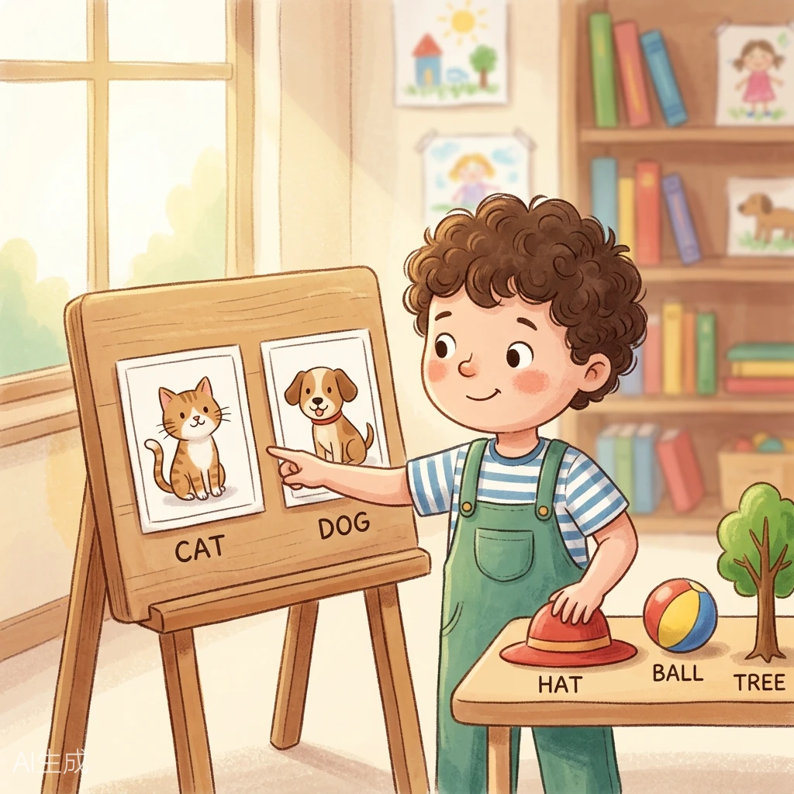
/images/assessment/hfw/variants/replacement-2026-06-05/hfw_51_75/hfw_workbook_hfw_51_75_find_s18.webp/images/assessment/hfw/variants/replacement-2026-06-05/hfw_51_75/hfw_workbook_hfw_51_75_find_s19.webp/images/assessment/hfw/variants/replacement-2026-06-05/hfw_51_75/hfw_workbook_hfw_51_75_find_s20.webp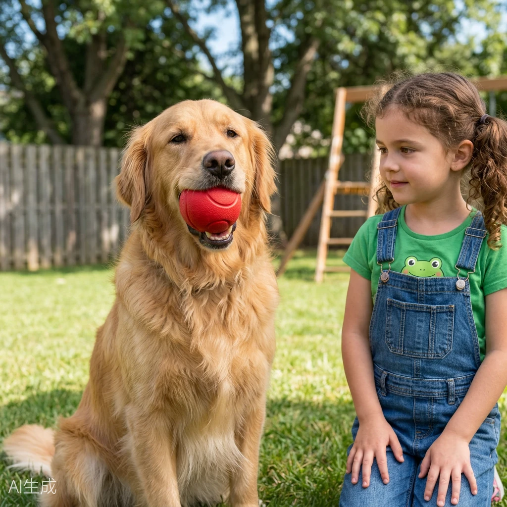
/images/assessment/hfw/variants/replacement-2026-06-05/hfw_51_75/hfw_workbook_hfw_51_75_had_s01.webp/images/assessment/hfw/variants/replacement-2026-06-05/hfw_51_75/hfw_workbook_hfw_51_75_had_s02.webp/images/assessment/hfw/variants/replacement-2026-06-05/hfw_51_75/hfw_workbook_hfw_51_75_had_s03.webp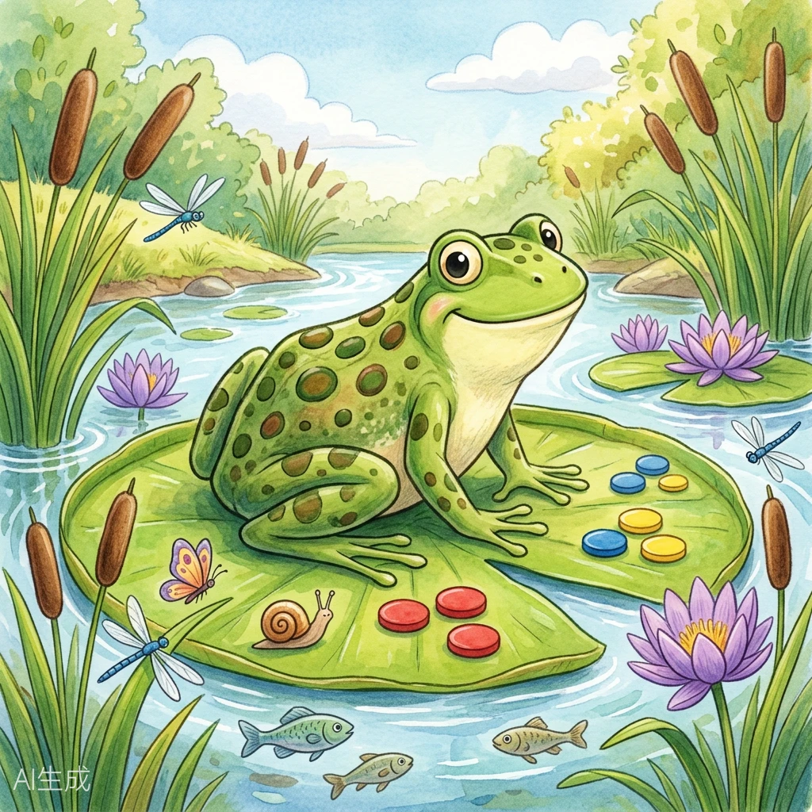
/images/assessment/hfw/variants/replacement-2026-06-05/hfw_51_75/hfw_workbook_hfw_51_75_had_s04.webp/images/assessment/hfw/variants/replacement-2026-06-05/hfw_51_75/hfw_workbook_hfw_51_75_had_s05.webp/images/assessment/hfw/variants/replacement-2026-06-05/hfw_51_75/hfw_workbook_hfw_51_75_had_s06.webp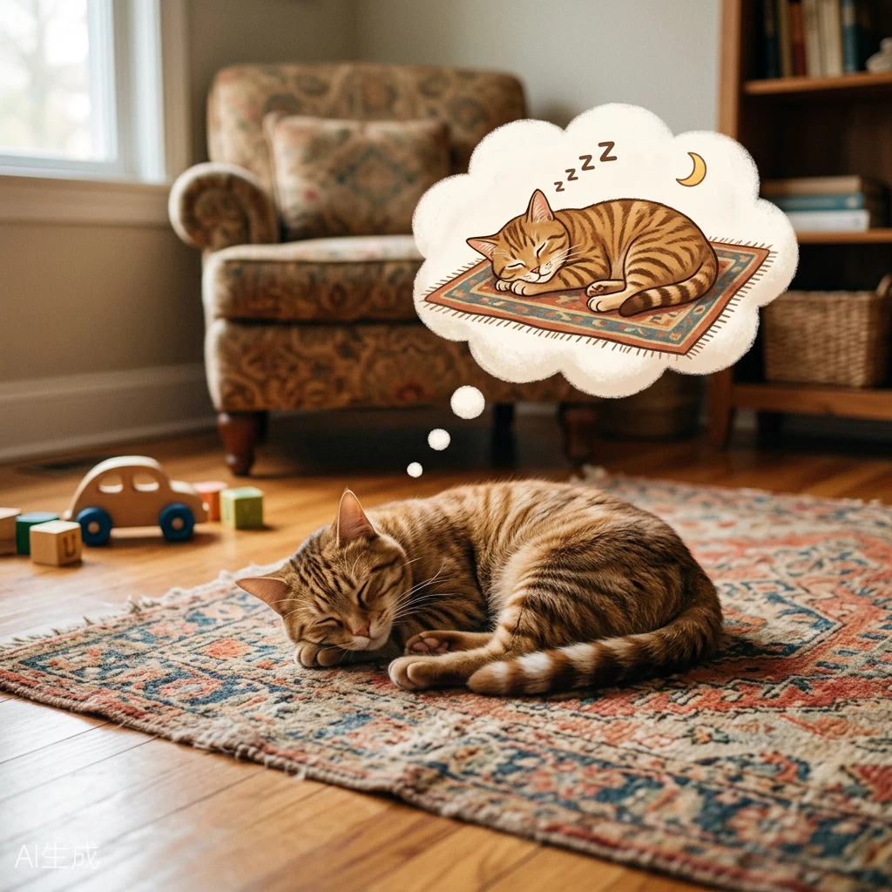
/images/assessment/hfw/variants/replacement-2026-06-05/hfw_51_75/hfw_workbook_hfw_51_75_had_s07.webp/images/assessment/hfw/variants/replacement-2026-06-05/hfw_51_75/hfw_workbook_hfw_51_75_had_s08.webp/images/assessment/hfw/variants/replacement-2026-06-05/hfw_51_75/hfw_workbook_hfw_51_75_had_s09.webp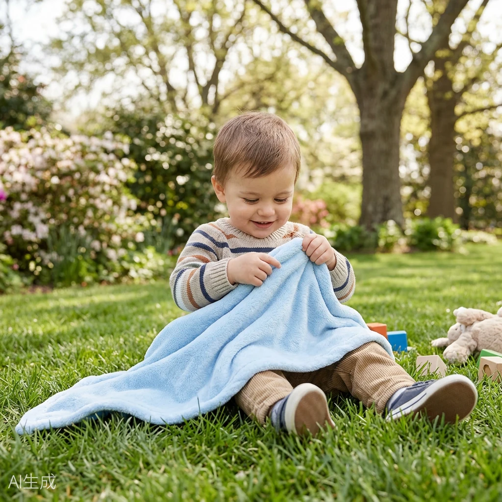
/images/assessment/hfw/variants/replacement-2026-06-05/hfw_51_75/hfw_workbook_hfw_51_75_had_s10.webp/images/assessment/hfw/variants/replacement-2026-06-05/hfw_51_75/hfw_workbook_hfw_51_75_had_s11.webp/images/assessment/hfw/variants/replacement-2026-06-05/hfw_51_75/hfw_workbook_hfw_51_75_had_s12.webp/images/assessment/hfw/variants/replacement-2026-06-05/hfw_51_75/hfw_workbook_hfw_51_75_had_s13.webp/images/assessment/hfw/variants/replacement-2026-06-05/hfw_51_75/hfw_workbook_hfw_51_75_had_s14.webp/images/assessment/hfw/variants/replacement-2026-06-05/hfw_51_75/hfw_workbook_hfw_51_75_had_s15.webp/images/assessment/hfw/variants/replacement-2026-06-05/hfw_51_75/hfw_workbook_hfw_51_75_had_s16.webp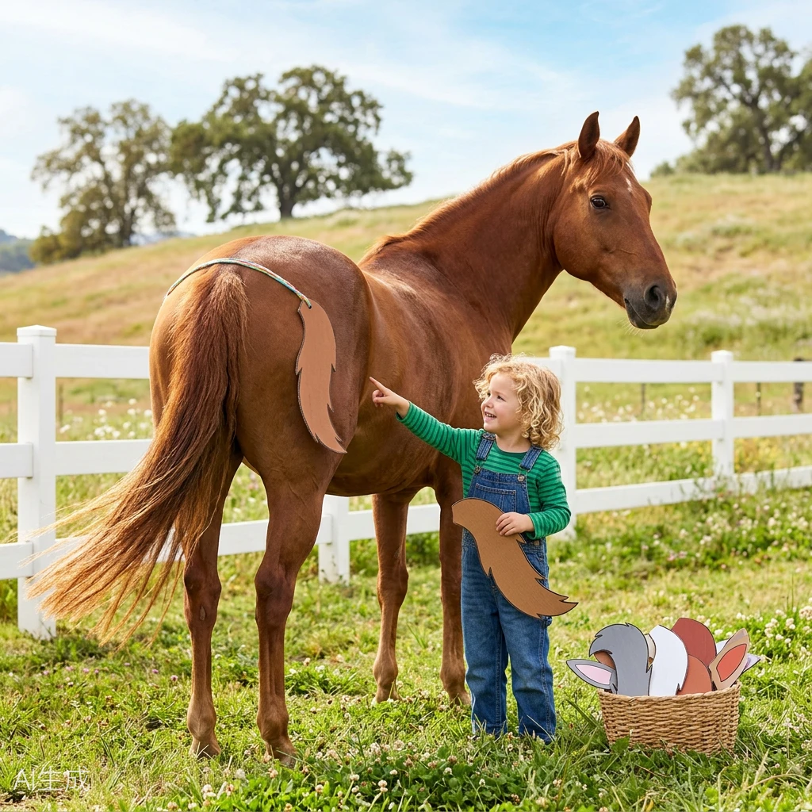
/images/assessment/hfw/variants/replacement-2026-06-05/hfw_51_75/hfw_workbook_hfw_51_75_had_s17.webp/images/assessment/hfw/variants/replacement-2026-06-05/hfw_51_75/hfw_workbook_hfw_51_75_had_s18.webp/images/assessment/hfw/variants/replacement-2026-06-05/hfw_51_75/hfw_workbook_hfw_51_75_had_s19.webp/images/assessment/hfw/variants/replacement-2026-06-05/hfw_51_75/hfw_workbook_hfw_51_75_had_s20.webp/images/assessment/hfw/variants/replacement-2026-06-05/hfw_51_75/hfw_workbook_hfw_51_75_has_s01.webp/images/assessment/hfw/variants/replacement-2026-06-05/hfw_51_75/hfw_workbook_hfw_51_75_has_s02.webp/images/assessment/hfw/variants/replacement-2026-06-05/hfw_51_75/hfw_workbook_hfw_51_75_has_s03.webp/images/assessment/hfw/variants/replacement-2026-06-05/hfw_51_75/hfw_workbook_hfw_51_75_has_s04.webp/images/assessment/hfw/variants/replacement-2026-06-05/hfw_51_75/hfw_workbook_hfw_51_75_has_s05.webp/images/assessment/hfw/variants/replacement-2026-06-05/hfw_51_75/hfw_workbook_hfw_51_75_has_s06.webp/images/assessment/hfw/variants/replacement-2026-06-05/hfw_51_75/hfw_workbook_hfw_51_75_has_s07.webp/images/assessment/hfw/variants/replacement-2026-06-05/hfw_51_75/hfw_workbook_hfw_51_75_has_s08.webp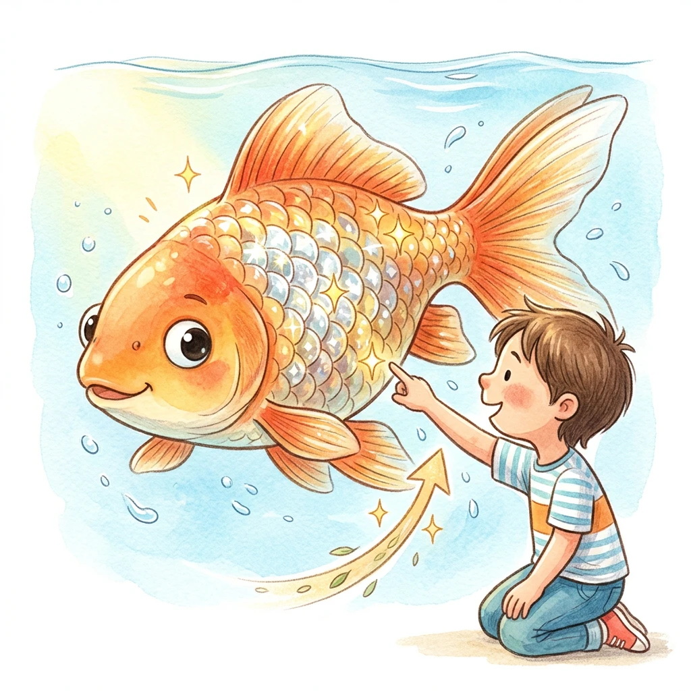
/images/assessment/hfw/variants/replacement-2026-06-05/hfw_51_75/hfw_workbook_hfw_51_75_has_s09.webp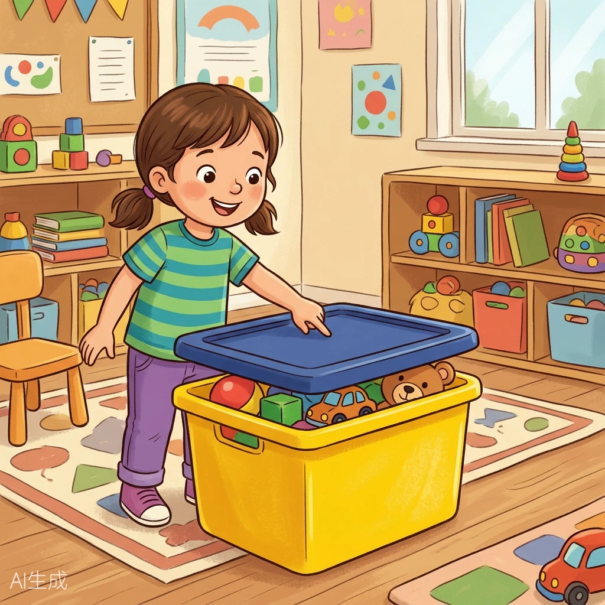
/images/assessment/hfw/variants/replacement-2026-06-05/hfw_51_75/hfw_workbook_hfw_51_75_has_s10.webp/images/assessment/hfw/variants/replacement-2026-06-05/hfw_51_75/hfw_workbook_hfw_51_75_has_s11.webp/images/assessment/hfw/variants/replacement-2026-06-05/hfw_51_75/hfw_workbook_hfw_51_75_has_s12.webp/images/assessment/hfw/variants/replacement-2026-06-05/hfw_51_75/hfw_workbook_hfw_51_75_has_s13.webp/images/assessment/hfw/variants/replacement-2026-06-05/hfw_51_75/hfw_workbook_hfw_51_75_has_s14.webp/images/assessment/hfw/variants/replacement-2026-06-05/hfw_51_75/hfw_workbook_hfw_51_75_has_s15.webp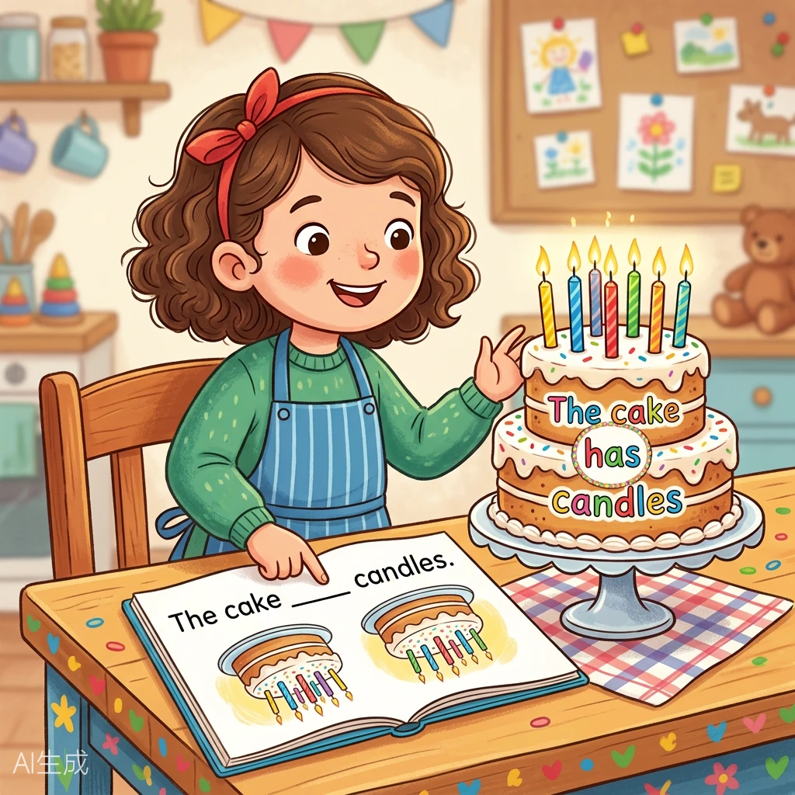
/images/assessment/hfw/variants/replacement-2026-06-05/hfw_51_75/hfw_workbook_hfw_51_75_has_s16.webp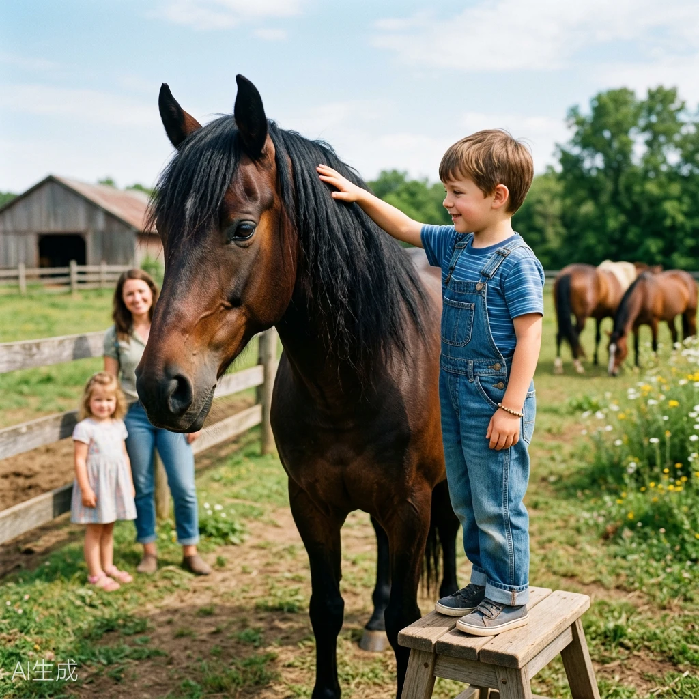
/images/assessment/hfw/variants/replacement-2026-06-05/hfw_51_75/hfw_workbook_hfw_51_75_has_s17.webp/images/assessment/hfw/variants/replacement-2026-06-05/hfw_51_75/hfw_workbook_hfw_51_75_has_s18.webp/images/assessment/hfw/variants/replacement-2026-06-05/hfw_51_75/hfw_workbook_hfw_51_75_has_s19.webp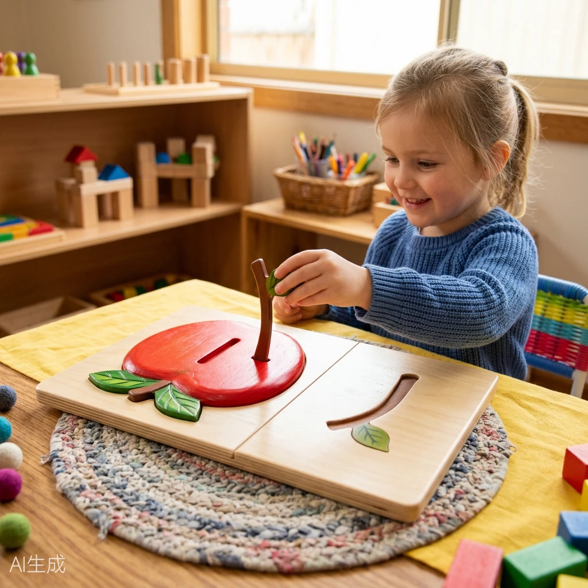
/images/assessment/hfw/variants/replacement-2026-06-05/hfw_51_75/hfw_workbook_hfw_51_75_has_s20.webp/images/assessment/hfw/variants/replacement-2026-06-05/hfw_51_75/hfw_workbook_hfw_51_75_her_s01.webp/images/assessment/hfw/variants/replacement-2026-06-05/hfw_51_75/hfw_workbook_hfw_51_75_her_s02.webp/images/assessment/hfw/variants/replacement-2026-06-05/hfw_51_75/hfw_workbook_hfw_51_75_her_s03.webp/images/assessment/hfw/variants/replacement-2026-06-05/hfw_51_75/hfw_workbook_hfw_51_75_her_s04.webp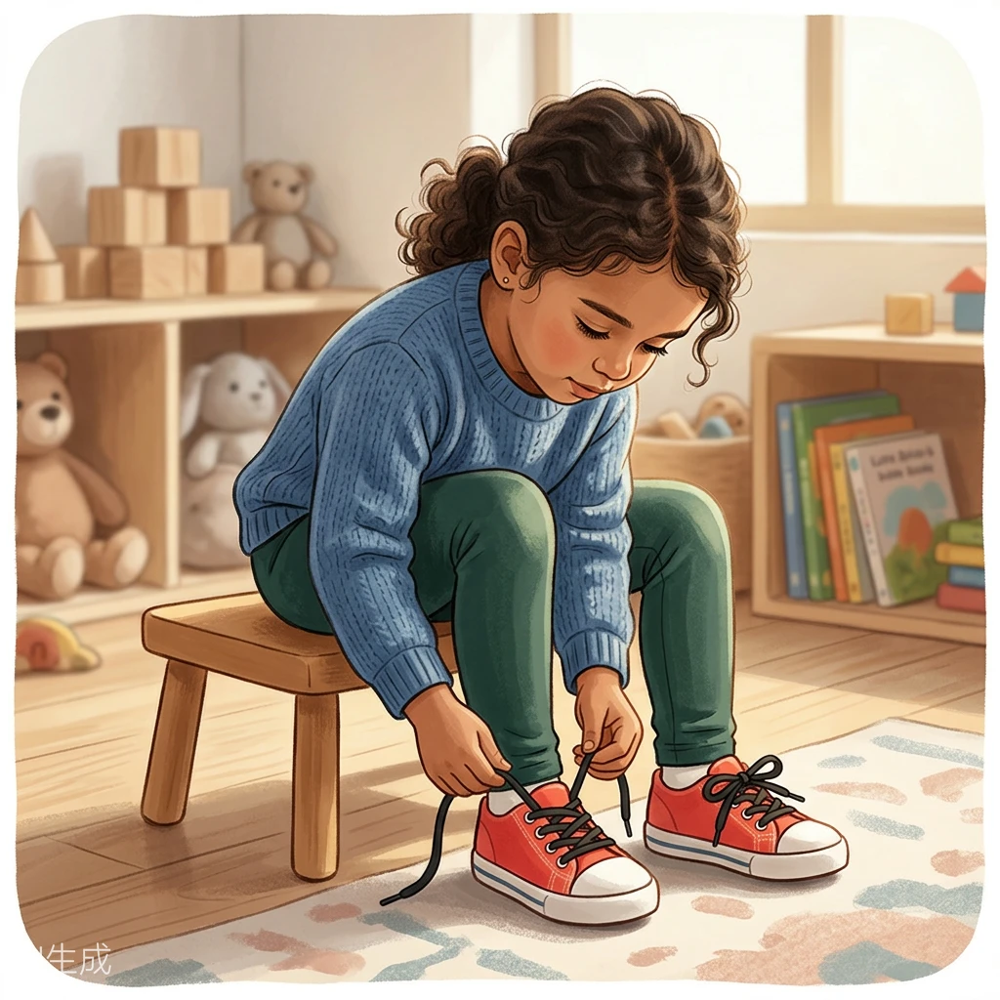
/images/assessment/hfw/variants/replacement-2026-06-05/hfw_51_75/hfw_workbook_hfw_51_75_her_s05.webp/images/assessment/hfw/variants/replacement-2026-06-05/hfw_51_75/hfw_workbook_hfw_51_75_her_s06.webp/images/assessment/hfw/variants/replacement-2026-06-05/hfw_51_75/hfw_workbook_hfw_51_75_her_s07.webp/images/assessment/hfw/variants/replacement-2026-06-05/hfw_51_75/hfw_workbook_hfw_51_75_her_s08.webp/images/assessment/hfw/variants/replacement-2026-06-05/hfw_51_75/hfw_workbook_hfw_51_75_her_s09.webp/images/assessment/hfw/variants/replacement-2026-06-05/hfw_51_75/hfw_workbook_hfw_51_75_her_s10.webp/images/assessment/hfw/variants/replacement-2026-06-05/hfw_51_75/hfw_workbook_hfw_51_75_her_s11.webp/images/assessment/hfw/variants/replacement-2026-06-05/hfw_51_75/hfw_workbook_hfw_51_75_her_s12.webp/images/assessment/hfw/variants/replacement-2026-06-05/hfw_51_75/hfw_workbook_hfw_51_75_her_s13.webp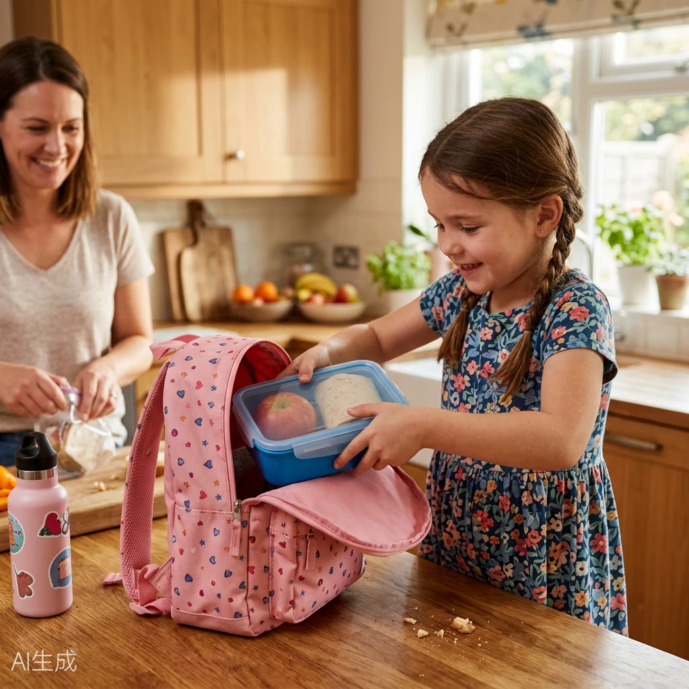
/images/assessment/hfw/variants/replacement-2026-06-05/hfw_51_75/hfw_workbook_hfw_51_75_her_s14.webp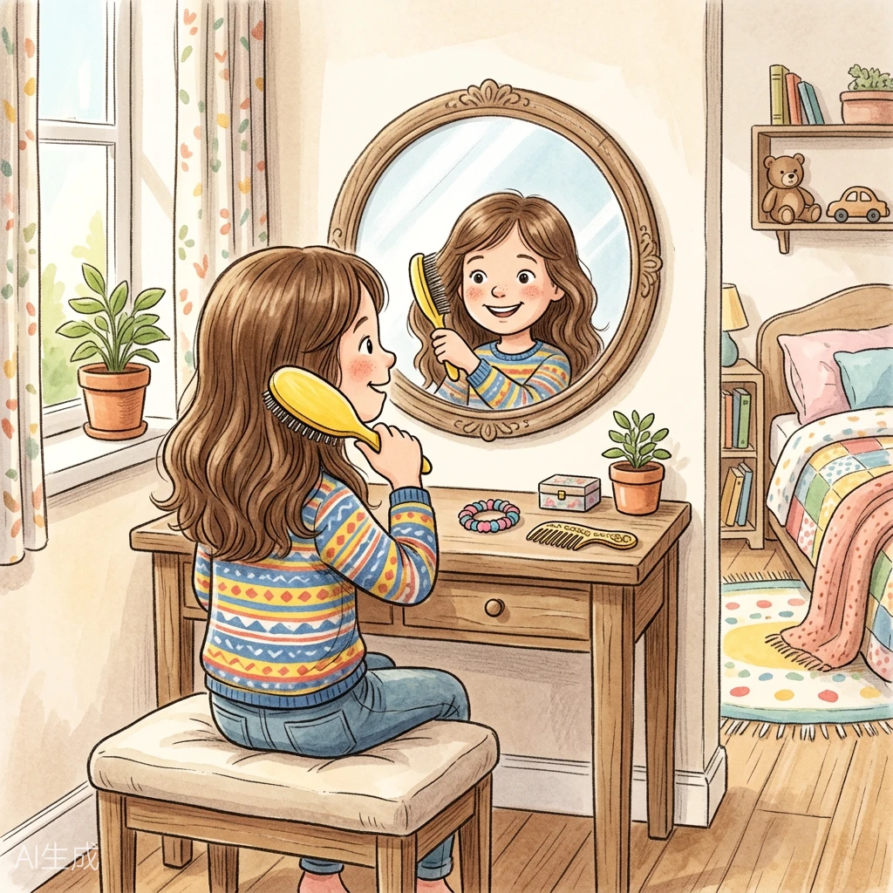
/images/assessment/hfw/variants/replacement-2026-06-05/hfw_51_75/hfw_workbook_hfw_51_75_her_s15.webp/images/assessment/hfw/variants/replacement-2026-06-05/hfw_51_75/hfw_workbook_hfw_51_75_her_s16.webp/images/assessment/hfw/variants/replacement-2026-06-05/hfw_51_75/hfw_workbook_hfw_51_75_her_s17.webp/images/assessment/hfw/variants/replacement-2026-06-05/hfw_51_75/hfw_workbook_hfw_51_75_her_s18.webp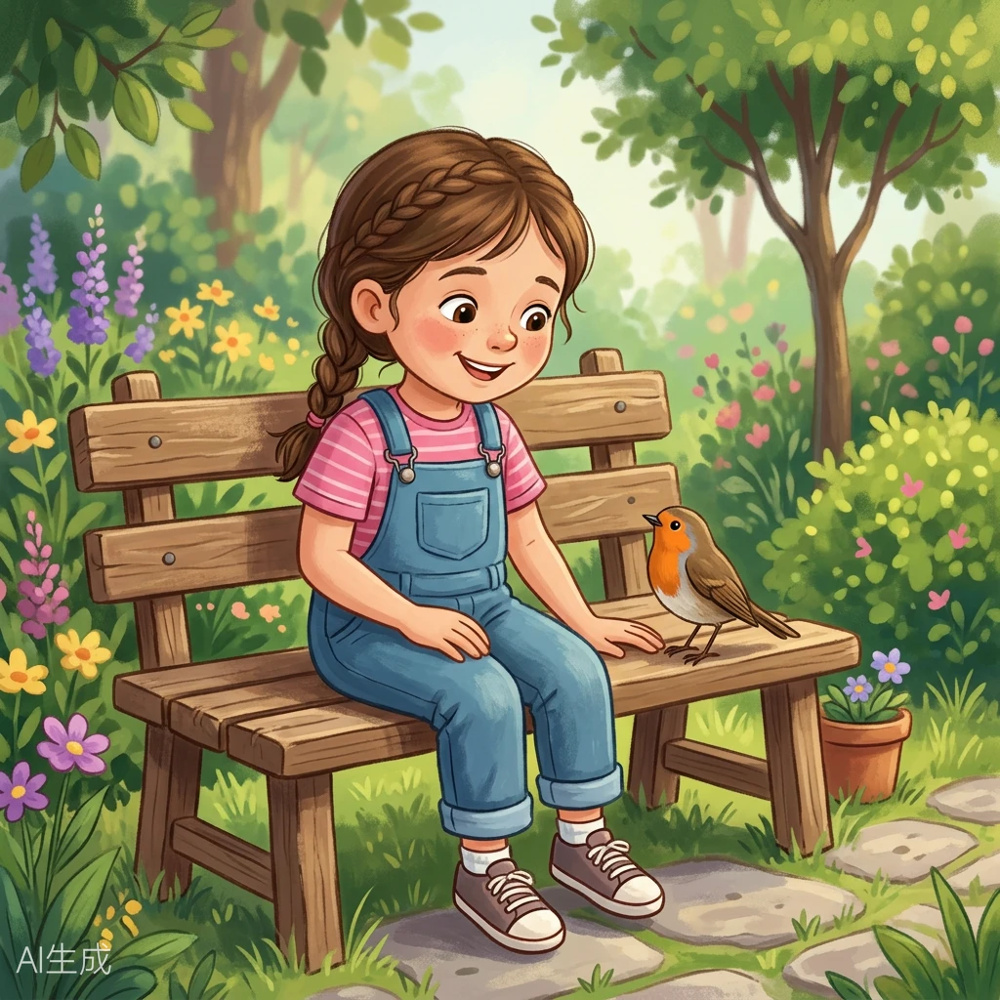
/images/assessment/hfw/variants/replacement-2026-06-05/hfw_51_75/hfw_workbook_hfw_51_75_her_s19.webp/images/assessment/hfw/variants/replacement-2026-06-05/hfw_51_75/hfw_workbook_hfw_51_75_her_s20.webp/images/assessment/hfw/variants/replacement-2026-06-05/hfw_51_75/hfw_workbook_hfw_51_75_him_s01.webp/images/assessment/hfw/variants/replacement-2026-06-05/hfw_51_75/hfw_workbook_hfw_51_75_him_s02.webp/images/assessment/hfw/variants/replacement-2026-06-05/hfw_51_75/hfw_workbook_hfw_51_75_him_s03.webp/images/assessment/hfw/variants/replacement-2026-06-05/hfw_51_75/hfw_workbook_hfw_51_75_him_s04.webp/images/assessment/hfw/variants/replacement-2026-06-05/hfw_51_75/hfw_workbook_hfw_51_75_him_s05.webp/images/assessment/hfw/variants/replacement-2026-06-05/hfw_51_75/hfw_workbook_hfw_51_75_him_s06.webp/images/assessment/hfw/variants/replacement-2026-06-05/hfw_51_75/hfw_workbook_hfw_51_75_him_s07.webp/images/assessment/hfw/variants/replacement-2026-06-05/hfw_51_75/hfw_workbook_hfw_51_75_him_s08.webp/images/assessment/hfw/variants/replacement-2026-06-05/hfw_51_75/hfw_workbook_hfw_51_75_him_s09.webp/images/assessment/hfw/variants/replacement-2026-06-05/hfw_51_75/hfw_workbook_hfw_51_75_him_s10.webp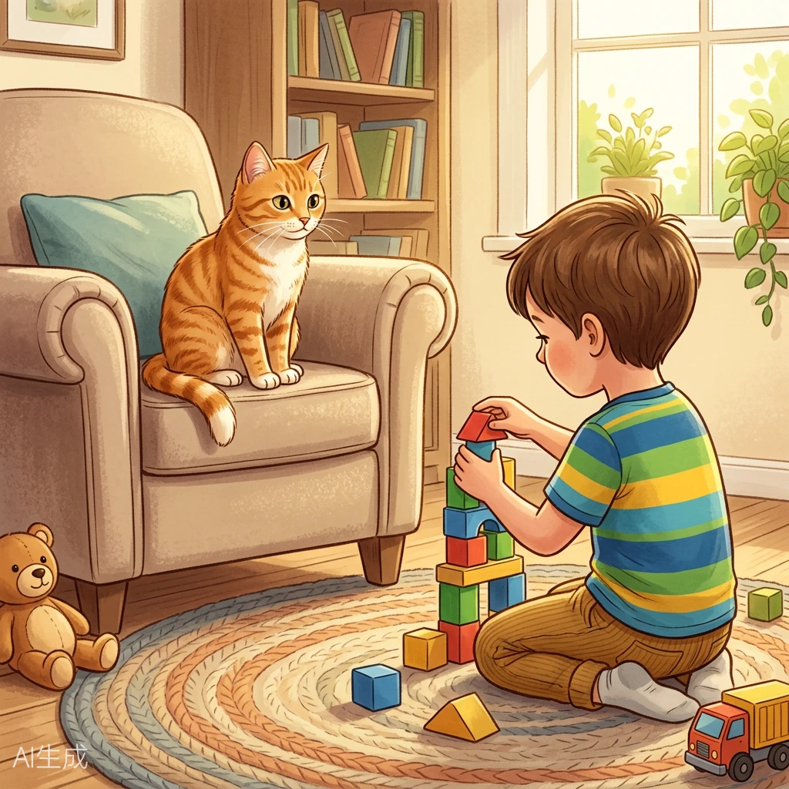
/images/assessment/hfw/variants/replacement-2026-06-05/hfw_51_75/hfw_workbook_hfw_51_75_him_s11.webp/images/assessment/hfw/variants/replacement-2026-06-05/hfw_51_75/hfw_workbook_hfw_51_75_him_s12.webp/images/assessment/hfw/variants/replacement-2026-06-05/hfw_51_75/hfw_workbook_hfw_51_75_him_s13.webp/images/assessment/hfw/variants/replacement-2026-06-05/hfw_51_75/hfw_workbook_hfw_51_75_him_s14.webp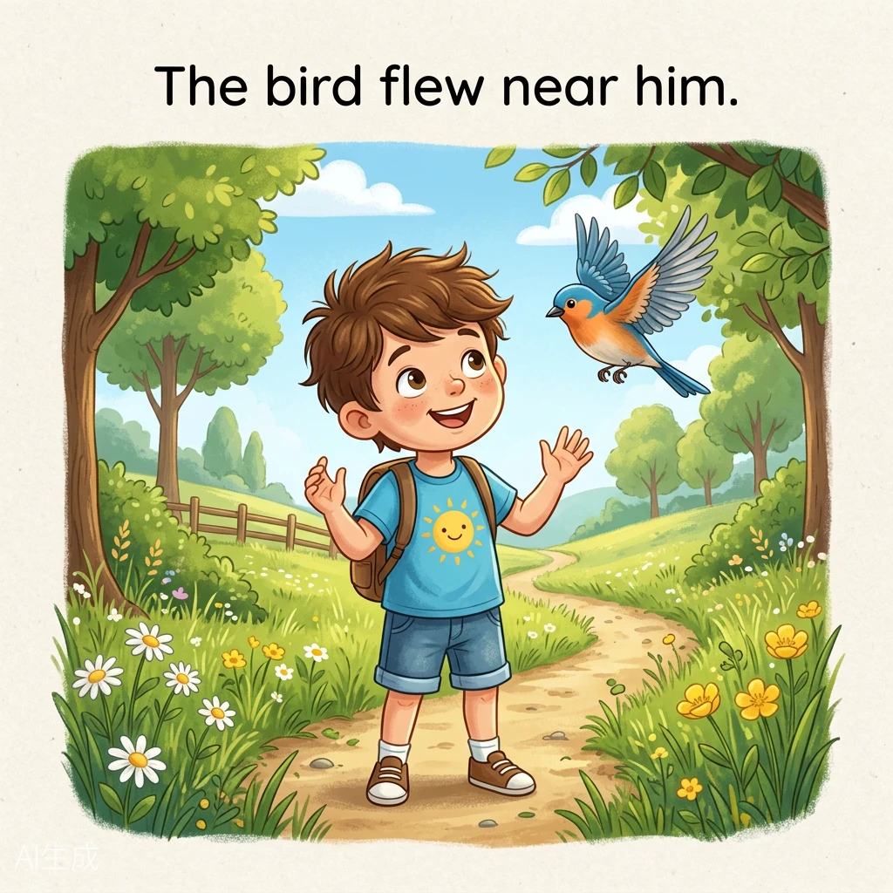
/images/assessment/hfw/variants/replacement-2026-06-05/hfw_51_75/hfw_workbook_hfw_51_75_him_s15.webp